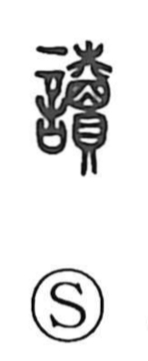

読

Uncategorized
Kun: yomu | On: doku, toku, tou
to read ・ recite ・ reading
Explanation
Originally written 讀, this is a phono-semantic character formed with the speech element and 賣 as its phonetic, which supplies the On readings (as also seen in 瀆 “toku/doku” and 牘 “toku”). Early citations describe praising poems and reading writings, and the Guliang Commentary to the Spring and Autumn Annals records the act of reading a text and placing it upon a sacrifice—evidence that the word referred to reading ritual prayers aloud to the gods. It is closely linked to 籀 (zhou/chū), which in bronze inscriptions denotes the formal reading of appointment texts. From this ceremonial, public recitation, the sense later broadened to the general meaning “to read.”